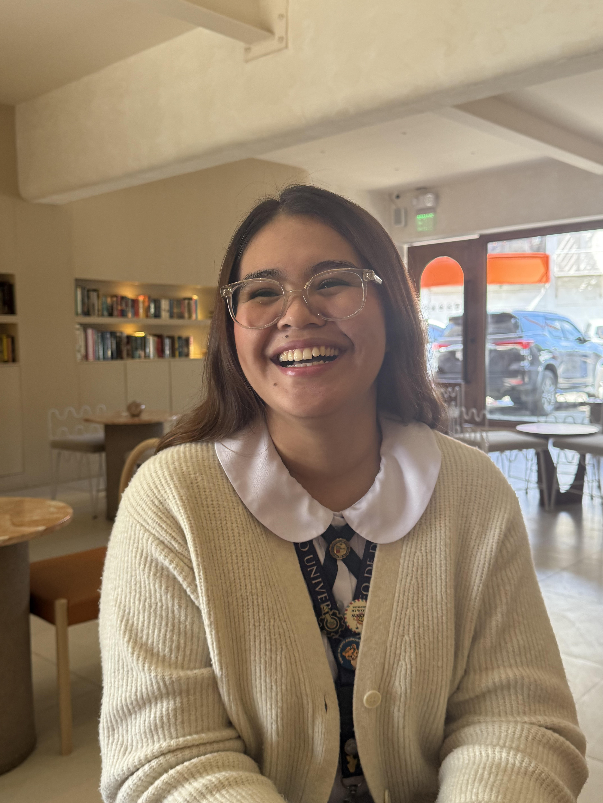

An aviation enthusiast but ended up taking BS Chemical Engineering because I had no choice (actually it was her second choice lol). I am a leadership-oriented individual who finds my purpose in doing service for others. Math and Science may not be my strongest areas, but the AdDU chemical engineering community taught me to be resilient which helped me persevere through my final year in college. Join me as I take you through my last semester in college, navigating the reactions, processes, and breakthroughs!
